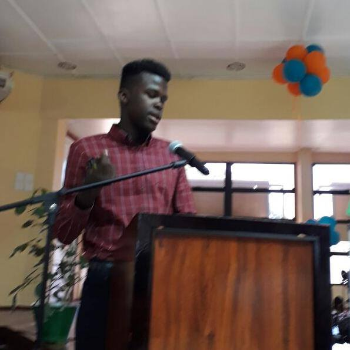

Hi I'm Andrew
 On August 15 1999, I was born in Georgetown Public Hospital
I spent a portion of my life abroad due to familial obligations.
I initially planned to become a lawyer however during my AS Levels, I realized that my passion revolved around computers and I did not want to spend my life following the footsteps of family while ignoring my dreams.
I decided to come back to Guyana after my AS Levels and pursue a 4-Year Degree in Computer Science.